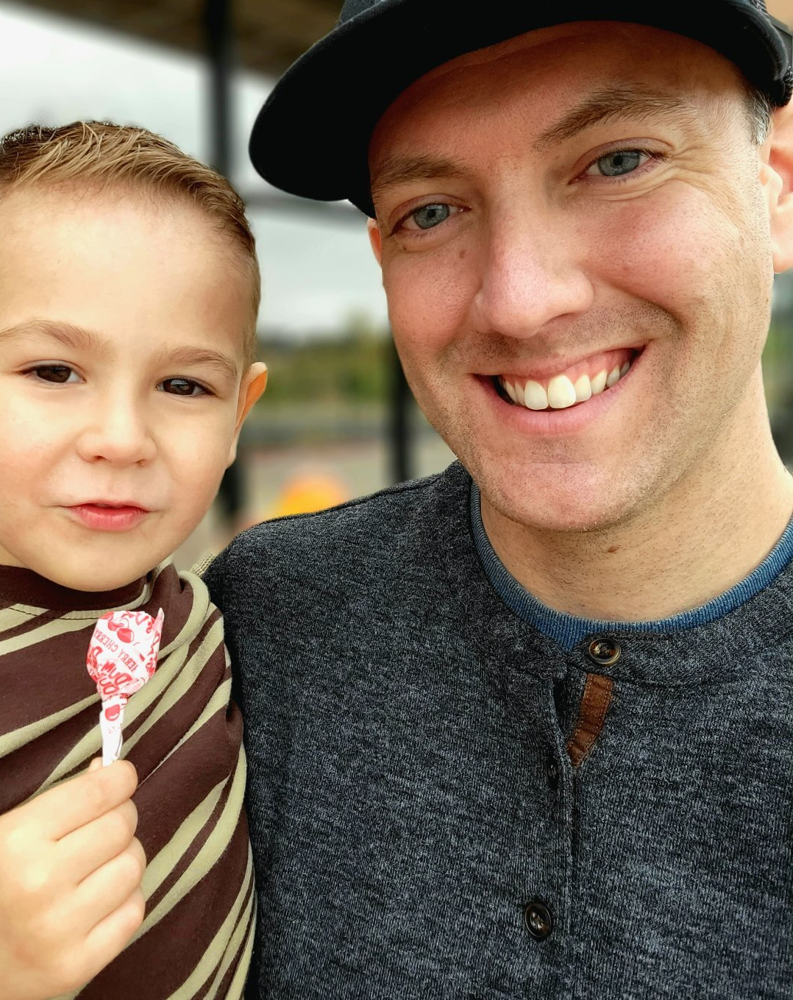

Brenda Jow
Meet Brenda Jow! Who said "Thanks to my dad who made up his last name so no one actually knows how to
pronounce my last name. My last name is pronounced “Jo”" She is orginally from Taiwan and moved to the U.S when
she was 14
years old.
Brenda graduated from the University of Washington, majoring in Early Childhood and Families Studies. She found
her
first passion - teaching, when volunteering at a Chinese school, and ever since she's been working in the
education field for almost 9 years. Now she found her second passion - coding. Learning how to code is not just
going to give her the opportunity to work in a different environment and challenge herself, but it also gives
her
the opportunity to build something that might benefit other people.
Our team loves food, and we always have the same problem after a long day, we cant decide what to eat for
dinner. So we came up with the idea that building an app that helps us decide what to make! I hope you like the
idea and the app!
Cody De La Torre
Cody De La Torre is a Software Developer working with Code Fellows as a student on projects that teach him the
tools he needs for his future roles.
Cody originates from sunny southern California and joined Code Fellows after five years as an Intelligence
Analyst and Security Manager in the United States
Army. He also served as a squad leader where he led, mentored, and trained multiple soldiers on the ins and outs
of his previous roles
Cody is currently studying for a degree in Graphic Information Technolgy with Arizona State University and
expects to graduate in 2024. He decided to help build this project becasue like his team members he is
passionate about food and loves to learn new recipes!
Jason Christopher
Jason Christopher lives in Oklahoma City with his wife and two sons. They have been stationed in OKC since 2013
and will be there for the foreseeable future since his wife is on active duty orders with the Oklahoma Army
National Guard.
Jason was active duty Air Force for eight years before deciding to transition to the Air Force Reserves where
he still does the same job as an Air Battle Manager on the E-3 AWACS…but now only part-time. He graduated from
the University of Florida and is a huge Gators fan!
Jason and his wife love cooking so deciding to help build this site was a no-brainer since he'll probably use
it to help them discover new recipes and utilize the ingredients they already have. Jason has really enjoyed his
software development journey so far and can't wait to see where it leads!
